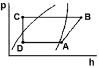

공조냉동기계기능사 (2006-04-02 기출문제)
1과목: 공조냉동안전관리
1. 아세틸렌 용접기에서 가스가 새어 나오는 경우에 검사하는 적당한 방법은?
- 냄새를 맡아본다.
- 모래를 뿌려본다.
- 비눗물을 칠해 검사해 본다.
- 성냥불을 가져다가 검사한다.
(정답률: 93%)

2. 가스용접 작업에서 일어나는 재해가 아닌 것은?
- 전격
- 화재
- 가스폭발
- 가스중독
(정답률: 90%)
3. 스패너를 힘주어 돌릴 때 지켜야 할 안전사항이 아닌 것은?
- 스패너를 밀지 말고 당기는 식으로 사용한다.
- 주위를 살펴보고 나서 조심성 있게 사용한다.
- 스패너 자루에 파이프 등을 끼워 사용한다.
- 스패너는 조금씩 돌려가며 사용한다.
(정답률: 86%)
4. 다음은 안전모에 대한 설명이다. 틀린 것은?
- 통풍이 잘 되어야 한다.
- 낡았거나 손상된 것은 교체한다.
- 턱끈은 반드시 조여 매지 않아도 된다.
- 각 개인별 전용으로 사용하도록 한다.
(정답률: 92%)
5. 해머 작업시 안전작업에 위배되는 것은?
- 장갑을 끼지 않고 작업
- 해머 작업 중에 해머상태 확인
- 해머 공동작업은 호흡을 맞출 것.
- 열처리 된 것은 강하게 때릴 것.
(정답률: 84%)
6. 보일러 버너 방폭문을 설치하는 이유는?
- 역화로 인한 폭발의 방지
- 연소의 촉진
- 연료절약
- 화염의 검출
(정답률: 85%)
7. 피복 아크 용접시 가장 많이 발생하는 가스는?
- 수소
- 이산화탄소
- 일산화탄소
- 수증기
(정답률: 62%)
8. 냉동장치 내압시험의 설명으로 적당한 것은?
- 물을 사용한다.
- 공기를 사용한다.
- 질소를 사용한다.
- 산소를 사용한다.
(정답률: 43%)
9. 공조실에서 가스용접을 하던 중 산소조정기에서 자연발화가 되었다. 그 원인은?
- 불똥이 조정기에 튀었을 때
- 직사광선을 받을 때
- 급격히 용기밸브를 열었을 때
- 산소가 새는 곳에 기름이 묻어 있을 때
(정답률: 50%)
10. 산소가 결핍되어 있는 장소에서 사용되는 마스크는?
- 송풍 마스크
- 방진 마스크
- 방독 마스크
- 격리식 방진마스크
(정답률: 82%)
11. 용접작업 중 감전사고가 발생했을 때 응급조치 방법이 아닌 것은?
- 즉시 냉수를 먹인다.
- 인공호흡을 시킨다.
- 전원을 차단한다.
- 119에 전화한다.
(정답률: 82%)
12. 수면계가 파손될 경우 제일 먼저 취해야 할 조치는?
- 물 콕을 먼저 닫는다.
- 증기 콕을 먼저 닫는다.
- 기름 밸브를 먼저 닫는다.
- 급수밸브를 먼저 닫는다.
(정답률: 49%)
13. 사업장에서 안전사고 발생시 안전사고를 조사하는 목적은?
- 안전사고의 분석 자료로 물적 증거를 수집하기 위함이다.
- 사고의 원인을 파악하여 책임을 규명하기 위함이다.
- 불안전한 행동과 상태의 사실을 알고 시정책을 강구하기 위함이다.
- 관계자들의 활동을 조사하여 상, 벌을 주기 위함이다.
(정답률: 73%)
14. 다음 중 유해한 광선과 가장 거리가 먼 것은?
- 적외선
- 자외선
- 레이저광선
- 가시광선
(정답률: 51%)
15. 고압가스가 충전되어 있는 용기는 몇 ℃ 이하에서 보관해야 하는가?
- 40℃
- 45℃
- 50℃
- 55℃
(정답률: 76%)
2과목: 냉동기계
16. 압축기에서 냉매를 압축하는 궁극적인 목적은 무엇인가?
- 저압으로 하기 위하여
- 액화하기 위하여
- 저열원으로 하기 위하여
- 팽창하기 위하여
(정답률: 54%)
17. 주파수 80Hz의 사인파 교류의 각속도는?
- 160.2[rad/sec]
- 251.2[rad/sec]
- 461.2[rad/sec]
- 502.4[rad/sec]
(정답률: 25%)
18. 다음과 같은 P-h선도에서 온도가 가장 높은 곳은?

- A
- B
- C
- D
(정답률: 74%)
19. 증발기내의 압력에 의해서 작동하는 팽창밸브는?
- 저압측 플로우트밸브
- 정압식 자동팽창밸브
- 온도식 자동팽창밸브
- 수동 팽창밸브
(정답률: 74%)
20. 나사식 강관 이음쇠(파이프 조인트)에 대한 다음 글 중 맞는 것은?
- 소구경(小口經)이고 저압의 파이프에 사용한다.
- 관로의 방향을 일정하게 할 때 사용한다.
- 저압 대구경의 파이프에 사용한다.
- 파이프의 분기점에는 사용해서는 안 된다.
(정답률: 49%)
21. 2단 압축 냉동장치에 있어서 중간냉각기의 역할에 관한 사항 중 틀린 것은?
- 증발기에 공급하는 액을 과냉각 시켜 냉동효과를 증대시킨다.
- 고압압축기의 흡입가스 압력을 저하시키고 압축비를 감소시킨다.
- 저압 압축기의 과열도를 저하시킨다.
- 고압압축기의 흡입가스의 온도를 내리고 냉동장치의 성적계수를 향상시킨다.
(정답률: 38%)
22. 원심식(Turbo) 압축기의 특징이 아닌 것은?
- 임펠러(impeller)에 의해 압축된다.
- 보통 전동기로 구동되지만, 증속장치가 필요하다.
- 부하가 증가하면 서어징이 일어난다.
- 주로 공기냉각용으로 직접팽창방식을 사용한다.
(정답률: 43%)
23. 냉매에 대하여 다음 각 항 중 맞는 것은?
- NH3는 물과 기름에 잘 녹는다.
- R-12는 기름과 잘 용해하나 물에는 잘 녹지 않는다.
- R-12는 NH3 보다 전열이 양호하다.
- NH3의 비중은 R-12 보다 작지만 R-22 보다 크다.
(정답률: 55%)
24. 냉동장치에 이용되는 부속기기 중 직접 압축기의 보호 역할을 하는 것이 아닌 것은?
- 온도자동 팽창밸브
- 안전밸브
- 유압보호 스위치
- 액 분리기
(정답률: 39%)
25. 다음 설명 중 틀린 것은?
- 유압보호 스위치의 종류는 바이메탈식과 가스통식이 있다.
- 단수릴레이는 수냉응축기 및 브라인 냉각기의 단수 및 감수시 압축기를 차단시키는 스위치이다.
- 왕복동식 압축기 기동시 유압보호스위치의 차압 접점은 붙어있다.
- 파열판은 일단 동작된 후 내부압력이 낮아지면 가스의 방출이 정지된다.
(정답률: 52%)
26. 다음 냉매 중 원심식 냉동기에 알 맞는 냉매는?
- R-11
- R-22
- R-290
- R-717
(정답률: 33%)
27. 드라이어(dryer)에 관한 사항 중 맞는 것은?
- 암모니아 가스관에 설치하여 수분을 제거한다.
- 냉동장치 내에 수분이 존재하는 것은 좋지 않으므로 냉매 종류에 관계없이 설치하여야 한다.
- 프레온은 수분과 잘 용해하지 않으므로 팽창밸브에서의 동결을 방지하기 위하여 설치한다.
- 건조제로는 황산, 염화칼슘 등의 물질을 사용한다.
(정답률: 66%)
28. 무기질 보온재로서 원통상으로 가공하며 400℃ 이하의 파이프, 덕트, 탱크 등의 보온보냉용으로 사용하는 것은?
- 규조토
- 글라스울
- 암면
- 경질 폴리우레탄 폼
(정답률: 40%)
29. 다음 설명 중 옳은 것은?
- 고체에서 기체가 될 때에 필요한 열을 증발열이라 한다.
- 온도의 변화를 일으켜 온도계에 나타나는 열을 잠열이라 한다.
- 기체에서 액체로 될 때 제거해야 하는 열은 응축열 또는 감열이라 한다.
- 기체에서 액체로 될 때 필요한 열은 응축열이며, 이를 잠열이라 한다.
(정답률: 57%)
30. 2원 냉동기의 저온측 냉매로 사용이 적당치 않은 것은?
- R-12
- 프로판
- R-13
- R-14
(정답률: 30%)
31. 왕복동 압축기의 특징이 아닌 것은?
- 압축이 단속적이다.
- 진동이 크다.
- 크랭크 케이스 내부압력이 저압이다.
- 압축능력이 적다.
(정답률: 51%)
32. 다음 역률에 대한 설명 중 잘못된 것은?
- 전력과 피상전력과의 비이다.
- 저항만 있는 교류회로에서는 1이다.
- 유효전류와 전전류의 비이다.
- 값이 0인 경우는 없다.
(정답률: 65%)
33. 저항이 50Ω인 도체에 100V의 전압을 가할 때, 그 도체에 흐르는 전류는 몇 A인가?
- 0.5[A]
- 2[A]
- 5000[A]
- 5[A]
(정답률: 62%)
34. 배관재료 부식방지를 위하여 사용하는 도료가 아닌 것은?
- 래커
- 아스팔트
- 페인트
- 아교
(정답률: 46%)
35. 다음 중 양모나 우모를 사용한 피복재료이며, 아스팔트로 방습피복한 보냉용 또는 곡면의 시공에 사용되는 것은?
- 펠트
- 콜크
- 기포성수지
- 암면
(정답률: 51%)
36. 다음 중 프레온계 냉매의 특성이 아닌 것은?(오류 신고가 접수된 문제입니다. 반드시 정답과 해설을 확인하시기 바랍니다.)
- 화학적으로 안정하다.
- 독성이 없다.
- 가연성, 폭발성이 없다.
- 강관에 대한 부식성이 크다.
(정답률: 62%)
37. 일반적으로 벽코일 동결실의 선반으로 많이 사용되는 증발기 형식은?
- 헤링 본식(herring-bone)증발기
- 핀 튜브식(finned tube type)증발기
- 평판식(plate type)증발기
- 캐스캐이드식(cascade type)증발기
(정답률: 55%)
38. 어떤 냉동 사이클의 증발온도가 -15℃이고, 포화액의 엔탈피가 100kcal/kg, 건조포화 증기의 엔탈피가 160kcal/kg, 증발기에 유입되는 습증기의 건조도 X=0.25일 때 냉동효과는?
- 15kcal/kg
- 35kcal/kg
- 45kcal/kg
- 75kcal/kg
(정답률: 32%)
39. 다음에서 분해 조립이 가능한 배관연결 부속은?
- 붓싱, 티이
- 플러그, 캡
- 소켓, 엘보
- 플렌지, 유니온
(정답률: 70%)
40. 기체를 액화시키는 방법으로 옳은 것은?
- 임계압력 이하로 압축한 후 냉각시킨다.
- 임계온도 이상으로 가열한 후 압력을 높인다.
- 임계온도 이하로 냉각하고 임계압력 이상으로 가압한다.
- 임계온도 이하로 냉각하고 임계압력 이하로 감압한다.
(정답률: 40%)
41. 입형 쉘앤 튜브식 응축기의 장점이 아닌 것은?
- 과부하에 잘 견딘다.
- 운전 중에도 냉각관 청소가 용이하다.
- 과냉각이 양호하다.
- 옥외 설치가 가능하다.
(정답률: 31%)
42. 회전 날개형 압축기에서 회전 날개의 부착은?
- 스프링의 힘에 의하여 실린더에 부착한다.
- 원심력에 의하여 실린더에 부착한다.
- 고압에 의하여 실린더에 부착한다.
- 무게의 의하여 실린더에 부착한다.
(정답률: 82%)
43. 냉동장치의 운전 상태에 관한 사항이다. 옳은 것은?
- 증발기내의 냉매는 피냉각물체로부터 열을 흡수함으로서 증발기 내를 흘러감에 따라 온도가 상승한다.
- 응축온도는 냉각수 입구온도보다 약간 높다.
- 크랭크 케이스 내의 유온은 흡입가스에 의하여 냉각되므로 흡입가스 온도보다 낮아지는 경우도 있다.
- 압축기 토출직후의 증기온도는 응축과정중의 냉매온도보다 낮다.
(정답률: 35%)
44. 왕복동식 암모니아(NH3)압축기에서 워터 자켓을 사용하는 설명 중에서 옳은 것은?
- 암모니아(NH3)냉매는 다른 냉매에 비하여 비열비가 크기 때문이다.
- 암모니아(NH3)냉매는 다른 냉매에 비하여 저온에 사용되기 때문이다.
- 암모니아(NH3)냉매는 다른 냉매에 비하여 비체적이 크기 때문이다.
- 암모니아(NH3)냉매는 다른 냉매에 비하여 압력 범위가 넓기 때문이다.
(정답률: 55%)
45. 흡수식 냉동장치에서 냉매인 물이 5℃ 전후의 온도로 증발하고 있다. 이때 증발기 내부의 압력은?
- 약 7㎜Hg.a 정도
- 약 32㎜Hg.a 정도
- 약 75㎜Hg.a 정도
- 약 108㎜Hg.a 정도
(정답률: 39%)
3과목: 공기조화
46. 다음 중 냉각탑과 응축기 사이에 순환되는 물의 명칭은?(오류 신고가 접수된 문제입니다. 반드시 정답과 해설을 확인하시기 바랍니다.)
- 정수
- 냉각수
- 응축수
- 온수
(정답률: 36%)
47. 100RT의 터보 냉동기에 순환되는 냉수량(ℓ/min)을 구하면 약 얼마인가? (단, 냉각기 입구에서 냉수의 온도는 12℃, 출구에서는 6℃이며, 또 응축기로 들어오는 냉각수의 온도는 32℃, 출구의 온도는 37℃이다.)
- 1,922ℓ/min
- 1,439ℓ/min
- 1,107ℓ/min
- 922ℓ/min
(정답률: 37%)
48. 면적이 100m2이고, 열통과율이 3.0kcal/m2h℃인 서쪽 외벽을 통한 손실열량은 얼마인가? (단, 실내공기와 외기의 온도차는 20℃이고, 방위계수는 동쪽 1.⑤, 서쪽 1.⑤, 남쪽 1.00, 북쪽 1.10이다.)
- 3,714kcal/h
- 5,000kcal/h
- 6,300kcal/h
- 7,600kcal/h
(정답률: 16%)
49. 다음 중 공기를 가습하는 방법으로 부적당한 것은?
- 직접팽창 코일의 이용
- 공기세정기의 이용
- 증기의 직접분무
- 온수의 직접분무
(정답률: 30%)
50. 구조가 간단하고, 내부청소가 쉬우며, 전열면적이 적은데다 수부가 크므로 증기발생은 느리나 취급이 용이한 특징을 갖는 보일러는 어느 것인가?
- 노통보일러
- 연관식 보일러
- 주철제보일러
- 기관차형 보일러
(정답률: 62%)
51. 다음 중 조명부하를 쉽게 처리할 수 있는 취출구는?(오류 신고가 접수된 문제입니다. 반드시 정답과 해설을 확인하시기 바랍니다.)
- 아네모스텟
- 축류형 취출구
- 웨이형 취출구
- 라이트 트로퍼
(정답률: 28%)
52. 다음 중 중앙 공기조화방식으로 각 실내의 온도조절이 가장 잘되는 방식은?(오류 신고가 접수된 문제입니다. 반드시 정답과 해설을 확인하시기 바랍니다.)
- 멀티존 유니트 방식
- 패케이지 방식
- 팬 코일 유니트 방식
- 단일 덕트 방식
(정답률: 20%)
53. 복사난방에 관한 설명 중 맞지 않는 것은?
- 복사난방은 주야를 계속 난방해야 하는 곳에 유리하다.
- 단열층 공사비가 많이 들고 배관의 고장발견이 어렵다.
- 대류난방에 비하여 설비비가 많이 든다.
- 방열체의 열용량이 적으므로 외기온도에 따라 방열량의 조절이 쉽다.
(정답률: 51%)
54. 냉, 난방에 필요한 전 송풍량을 하나의 주덕트 만으로 분배하는 방식은?(오류 신고가 접수된 문제입니다. 반드시 정답과 해설을 확인하시기 바랍니다.)
- 단일 덕트 방식
- 이중 덕트 방식
- 멀티존 유니트 방식
- 팬 코일 유니트 방식
(정답률: 17%)
55. 공기조화에는 크게 보건용 공기조화와 산업용(공업용) 공기조화로 구분될 수 있다. 아래의 설명 중 보건용 공기조화로만 취급하기 어려운 것은?
- A라는 사람이 근무하는 전자계산기실의 공기조화
- B라는 사람이 근무하는 일반사무실의 공기조화
- C라는 사람이 쇼핑하는 백화점의 공기조화
- D라는 사람이 살고 있는 주택의 공기조화
(정답률: 70%)
56. 상대습도(ø)을 옳게 표시한 것은?
- ø = 수증기압/포화수증기압 × 100
- ø = 포화수증기압/수증기압 × 100
- ø = 수증기중량/포화수증기압 × 100
- ø = 포화수증기중량/수증기중량 × 100
(정답률: 50%)
57. 열전도율의 단위로 맞는 것은?
- kcal/hm2
- kcal/hkgm2
- kcal/h℃m
- kcal/hm
(정답률: 47%)
58. 상대습도 (RH)가 100%일 때 동일하지 않는 온도는?
- 건구온도
- 습구온도
- 효과온도
- 노점온도
(정답률: 37%)
59. 폐회로식 수 열원 히트 유닛방식의 장점으로 알맞은 것은?
- 소음이 크다.
- 열회수가 용이하다.
- 고정률이 높고 수명이 짧다.
- 운전전문 기술자가 필요 없다.
(정답률: 69%)
60. 다음 설명 중 틀린 것은?
- 지구상에 존재하는 모든 공기는 건공기로 취급된다.
- 공기 중에 수증기가 많이 함유될수록 상대습도는 높아진다.
- 지구상의 공기는 질소, 산소, 알곤, 이산화탄소 등으로 이루어졌다.
- 공기 중에 함유될 수 있는 수증기의 한계는 온도에 따라 달라진다.
(정답률: 81%)